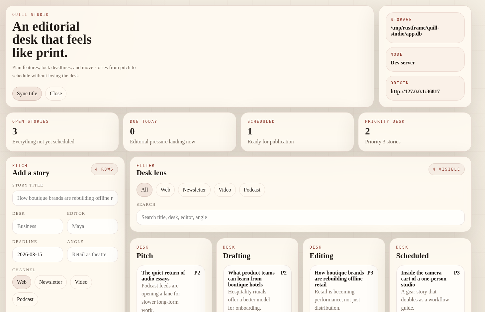

Rust / Tao / Wry
Frontend-first desktop apps without the usual framework pileup.
RustFrame keeps the app folder plain, embeds real frontend assets into a native window, exposes a small IPC bridge, and enables SQLite, filesystem, or shell capabilities only when the runtime explicitly allows them.
Workspace
What actually lives in this repo
`crates/rustframe`
Owns the desktop shell, custom protocol, IPC dispatch, SQLite capability, filesystem scope, and shell allowlist support.
`crates/rustframe-cli`
Scaffolds apps, reads window metadata from `index.html`, embeds assets, and writes the hidden runner under `target/rustframe/`.
`examples/capability-demo`
Shows native window controls, sandboxed file reads, and allowlisted process execution without a localhost bridge.
`apps/*`
Ships multiple frontend-first desktop examples ranging from note-taking and task planning to CRM, inventory, and editorial workflows.
Workflow
Keep the app folder plain. Let the runner stay hidden.
Generate an app folder
RustFrame writes `index.html`, `styles.css`, `app.js`, `bridge.js`, and an optional `data/` directory into `apps/
Build the UI with plain web files
Window title and size come from the HTML itself. The app folder stays frontend-first and free of visible Rust runner code.
Run through a generated runner
`dev` and `export` materialize the hidden Rust runner under `target/rustframe/apps/
Gate capabilities explicitly
SQLite turns on when `data/schema.json` exists. Filesystem and shell methods stay unavailable unless the runtime grants them.
Capabilities
Small native surface, explicit scope
Close, minimize, maximize, rename
The bridge exposes a small `window.RustFrame.window.*` surface instead of a large plugin system.
Schema and seeds embedded into the app
When `data/schema.json` exists, RustFrame provisions SQLite and exposes CRUD methods with automatic `id`, `createdAt`, and `updatedAt` fields.
Read access is root-scoped
`fs.readText(...)` only succeeds inside explicitly allowed directories and rejects parent escapes or outside paths.
Commands must be allowlisted by name
`shell.exec(...)` resolves to structured output, but only for commands that the runtime registered ahead of time.
Example Apps
Desktop surfaces already living in the repository

Seeded SQLite example
Atlas CRM
Pipeline lanes, deal capture, and native title sync backed by a `deals` table.
apps/atlas-crm

CRUD surface
Daybreak Notes
A calm local notes library backed by `notes`.

Starter app
Hello Rustframe
The template path for title sync, embedded seeds, and the smallest useful app.

Frontend-only app
Orbit Desk
Task planning, notes, and a focus timer backed by browser storage instead of SQLite.
Media-forward example
Prism Gallery
A bright asset library showing how far the visual layer can move without changing the runtime contract.

Editorial board
Quill Studio
Story lanes, deadlines, and multi-channel workflow backed by a `stories` table.
Docs
Move from the landing page into the actual contract
Docs index
Start with the repo map
Use the docs index to move through the workspace, runtime model, app contract, and example set.
Guide Getting startedRun the capability demo, scaffold an app, and export a release build.
Runtime CapabilitiesSee how embedded assets, direct IPC, SQLite, filesystem roots, and shell allowlists fit together.
Contract Frontend app rulesEverything app folders must do to dev cleanly and export without surprises.